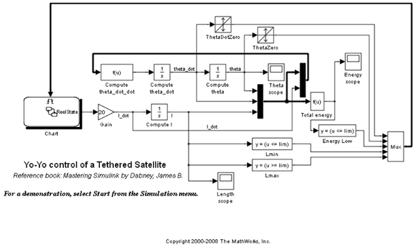
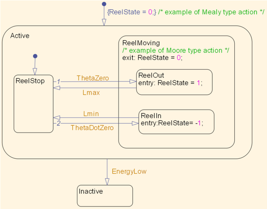
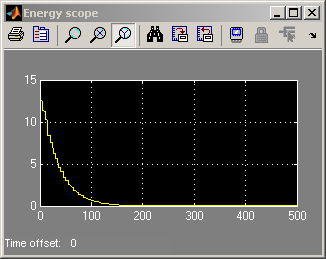
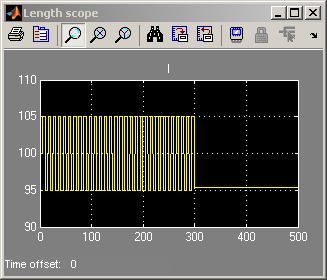
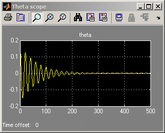

Yo-Yo Control of Satellites
This demo is a model of a tethered satellite system, which consists of a small satellite attached by a long tether to an orbiting platform. The control system within this model is used to stabilize the pendulum to prevent it from exhibiting too much libration (oscillation). This is done by reeling out the tether to its maximum length when the satellite is in the middle of its arc (which decreases its angular acceleration) and by reeling in the tether when the satellite's angular velocity is equal to zero.
Stateflow® is used to control when the tether is reeled in or reeled out using input events from Simulink®. When the satellite is in the middle of its swing (theta = 0), the state ReelOut is entered. When the satellite has been reeled out as far as it can, the state ReelStop is entered. When the angular velocity of the satellite reaches zero, the ReelIn state is entered. And when the tether is as short as possible, the ReelStop state is once again entered. Finally, if the total energy of the satellite is too low, the system is inactivated by entering the Inactive state.
    